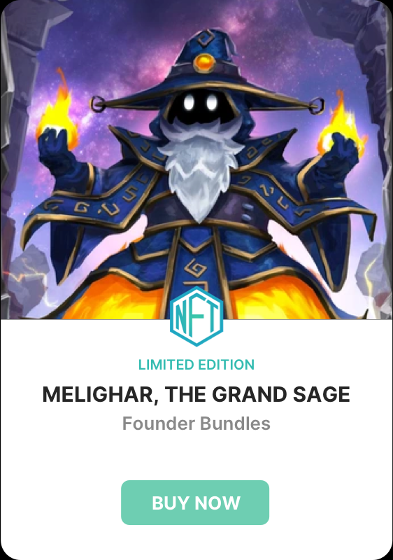
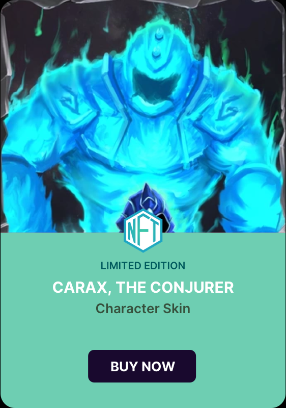
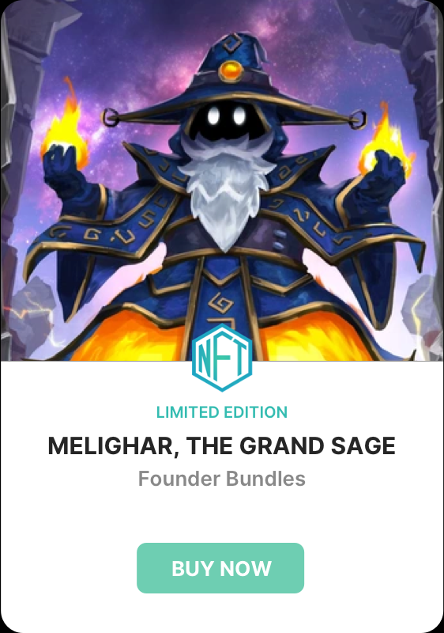
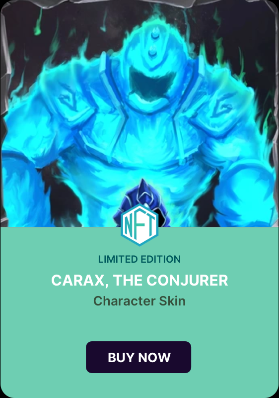

NFT and in-game item creation, tokenomics, management, and sales for Game Developers and Studios
 

Vorto offers an easy way to turn in-game items into tradable tokens. Your own branded online storefront with an additional peer-to-peer marketplace. Benefit from directly selling in-game items to your players. You can also set a royalty rate on peer-to-peer marketplace sales to earn additional revenue from trading between players of your game.
Through our APIs, game developers get access to item creation, inventory management and transaction reporting features. You can quickly get started with building blockchain-enabled features in your game.
Integrate NFTs in your games or game development projects with our easy-to-use API tools. Use the dashboard to get sales reports and track your created items.
Create different types of items to better fit with your gameplay, depending on the game mechanics. Use consumable items for resources, and let players craft or be rewarded with NFTs.
Create, manage, and monetize your in-game items (NFTs) from a single, clean interface and by directly integrating your game or live-service game with our APIs.
Players use Vorto Accounts or can link their crypto wallets. Use Vorto APIs to verify item ownership and manage items between the game and the platform.
If you don’t already have an account or authentication mechanism for your players, you can use Vorto Account for authenticating players in your game. Vorto Account supports passwordless and MFA authentication methods.
Customize the game storefront to better fit your game’s design. Find more information about the customization options in the Documentation section.
Vorto platform provides tools to manage in-game items - collectibles, rewards, and any other digital items you can imagine. We help you mint those items on Polygon or Near blockchain and provide the entire transaction history. Support for additional blockchains coming in the future. Check the Documentation page for currently supported blockchains and proposed additions.
Decide how you want your items to work and how they can be traded by using our smart contract templates. The Vorto platform is specifically designed to support tokenized digital in-game items. Our smart contract templates, item creation, and management have been designed to support different game genres, mechanics, tokenomics, and gameplay needs.
Vorto platform supports two distinct item types. Games can create tradeable consumable items (like resource items for crafting) that typically are used in bulk, or tokenize specific in-game items (like hero characters or valuable equipment). Tokenized items can be either created on the Vorto platform or as NFTs on a supported blockchain.